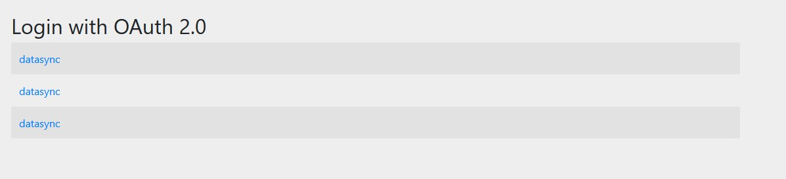
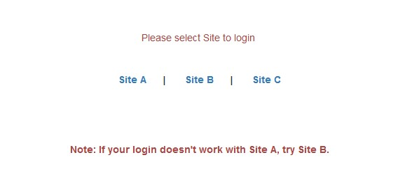
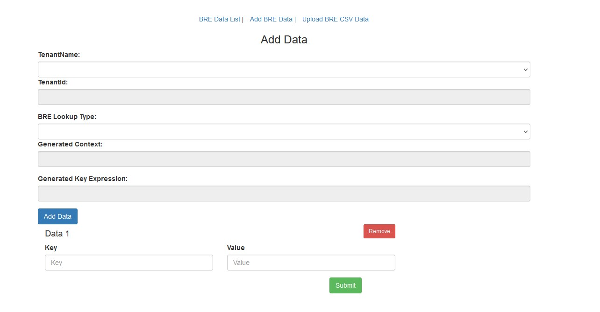
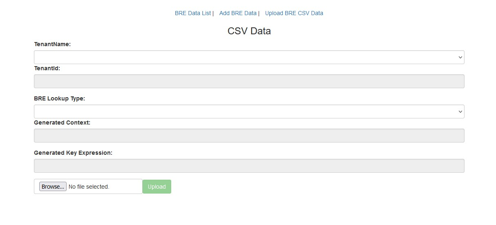
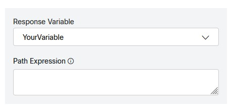

Ask your CSM to create a BRE Table for you
You can access the BRE data here: https://rules.wxcc-us1.cisco.com/datasync
⚠️ Important note: All BRE are settings, rules, attributes, and labels are case sensitive!
In the BRE
Click Attributes in the top ribbon
Click Add
Name: context (case sensitive)
Data Type: Text
Click Save
Click Labels in the top ribbon
Click Add
Name:
routeInfo (case sensitive)Click Save
Click Context in the top ribbon
Click Add Context
Name:
Table/Context that your CSM created for you (case sensitive)Attribute: context
Click Save
Click on the line of the Context you just created (
) Add the rules listed below
Click on Add Rule (Editor)
Name:
Found Active: True
Label:
routeInfo Priority: 100
Copy the rule into the editor:
Click on Add Rule (Editor)
Name:
Notfound Active: True
Label:
routeInfo Priority: 99
Copy the rule into the editor:
Navigate to https://rules.wxcc-us1.cisco.com/datasync/login
Click datasync link
Login using your tenant admin credentials if prompted
Select Site A

Click Add BRE Data
Select your tenant name from the Tenant Name drop down
Select the table name you want to add/update data to in the BRE Lookup Type drop down
Add the value you will be looking up in the Key field
Add the value you want to be returned in the Value field
Clicking Add Data will let you add additional rows
Clicking the Remove button will remove teh row from your Add/Update
Click Submit to save the updates
Click Upload BRE CSV data
Create a CSV file with 3 columns
⚠️ CSV must have headers in the file or the first row will be skipped
Key: the value you will be looking up
Value: the value you want to be returned
Action: the action you want taken on the key (ADD, UPDATE, DELETE)
Select your tenant name from the Tenant Name drop down
Select the table name you want to add/update data to in the BRE Lookup Type drop down
table ani your lookup value
